Продолжаем рассматривать возможности ConstraintLayout.
Chain
Chain можно перевести, как цепочка. Цепочка позволит вам равномерно распределить несколько View в имеющемся свободном пространстве.
Чтобы создать цепочку, необходимо выделить View и центрировать их по горизонтали или вертикали.
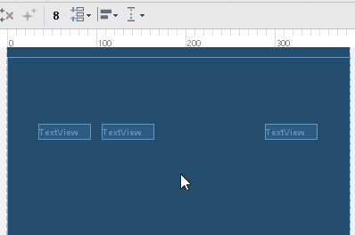
Цепочка может быть в одном из трех режимов.
spread
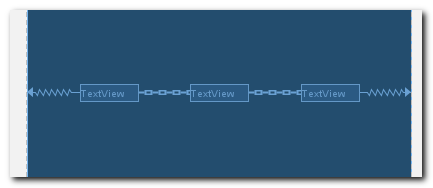
Свободное пространство равномерно распределяется между View и границами родителя.
spread_inside
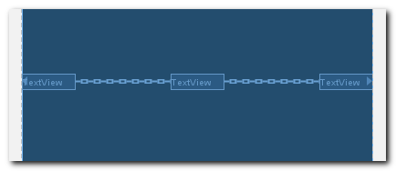
Свободное пространство равномерно распределяется только между View. Крайние View прижимаются к границам родителя.
packed
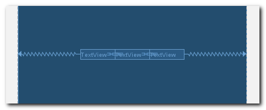
Свободное пространство равномерно распределяется между крайними View и границами родителя. Вы можете использовать margin, чтобы сделать отступы между View.
Режимы цепочки переключаются нажатием на значок цепи.
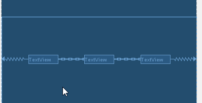
В режиме packed можно использовать скролл для настройки положения всех View относительно границ родителя.
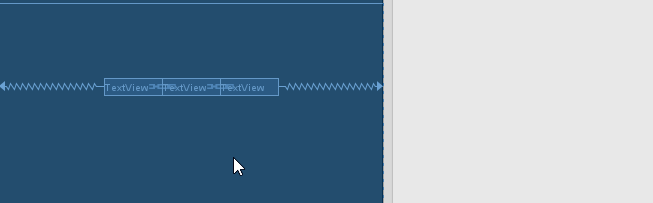
В качестве объектов для привязки можно использовать не только границы родителя, но и другие объекты.
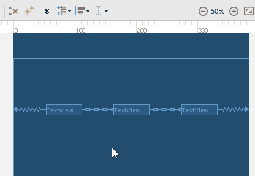
Вес
Цепочка позволяет нам указывать для View значение веса - weight. Это тот же вес, что мы обычно используем в LinearLayout.
Для работы с весами нам понадобятся weight атрибуты. По умолчанию их нет в основном списке Properties.

Чтобы увидеть все атрибуты, необходимо нажать на значок с двумя стрелками. Но каждый раз бегать туда неудобно. Есть другое решение. Обратите внимание, внизу в Properties есть секция Favorite Attributes. Мы добавим необходимые нам атрибуты туда.
Для этого воспользуемся поиском по слову weight и добавим найденные атрибуты в Favorite, нажав на звездочку.
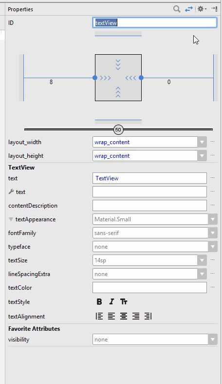
Теперь атрибуты весов появились в основном списке Properties.
Как и в LinearLayout, чтобы использовать вес, надо поставить размер View в 0dp. Давайте поставим левому TextView вес = 2, а правому = 1. А центральный TextView оставим wrap_content.
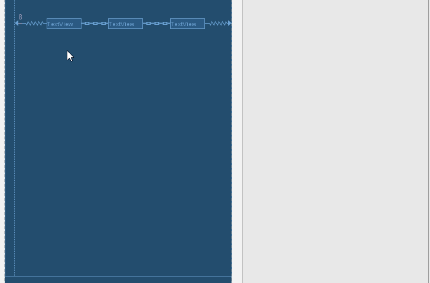
Теперь первый и третий TextView делят между собой свободное пространство в соотношении 2:1.
Barriers
Барьеры были презентованы на Google IO 2017. На сегодняшний день (12.07.17) они еще недоступны в релизной версии ConstraintLayout, но есть в beta версии.
Чтобы использовать бету, необходимо добавить google maven репозиторий и в dependencies указать бета версию для constraint-layout
repositories {
maven {
url 'https://maven.google.com'
}
}
dependencies {
...
compile 'com.android.support.constraint:constraint-layout:1.1.0-beta3'
}Предположим, что у нас есть такой экран.
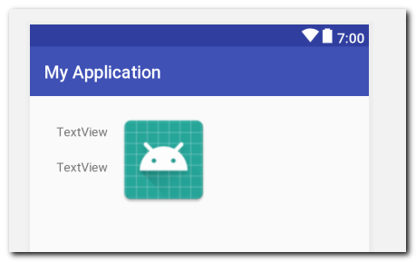
Два текста и картинка.
Картинка должна быть справа от обоих текстов, независимо от их размера. Т.е. если первый текст занимает больше места в ширину, то картинка должна быть правее первого текста. А если второй текст шире - то правее второго текста.
Это достаточно распространенный случай. Обычно это решается тем, что мы добавляем оба текста в LinearLayout (или RelativeLayout), ставим ему ширину wrap_content и располагаем картинку правее этого LinearLayout. В этом случае LinearLayout будет равен ширине самого широкого текста и картинка будет расположена справа от обоих текстов. Но учебники по UI оптимизации твердят нам, чтобы мы использовали как можно меньшее количество разных ViewGroup на экране, т.к. это не лучшим образом сказывается на производительности. Ок, прислушаемся к ним.
Чтобы не добавлять лишний LinearLayout, мы можем использовать барьер. Барьер можно настроить так, чтобы он располагался правее обоих TextView, независимо от того, какой из них шире. После этого останется только привязать картинку к этому барьеру.
Добавим и настроим барьер
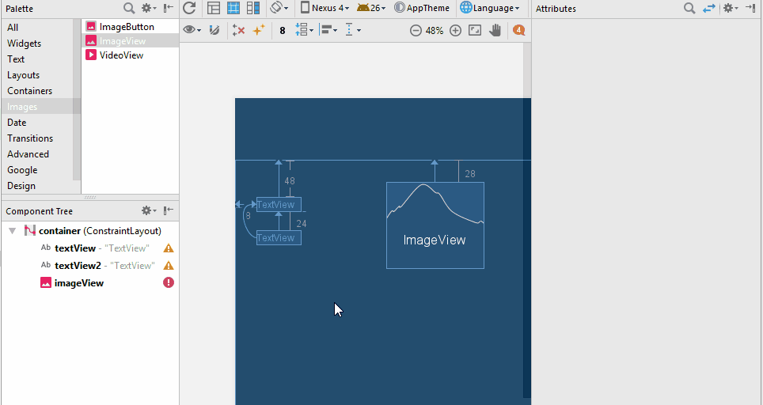
Мы выполняем 4 действия:
1) Добавляем вертикальный барьер
2) В Component Tree перетаскиваем оба TextView в барьер. Тем самым мы сообщаем барьеру, на какие View ему ориентироваться.
3) В Properties ставим для барьера barrierDirection в режим end (или right). Это значит, что барьер будет располагаться справа от всех View, которые были добавлены в пункте 2.
4) Привязываем картинку к барьеру.
Теперь, при изменении ширины TextView, будет смещаться барьер, а за ним и картинка.
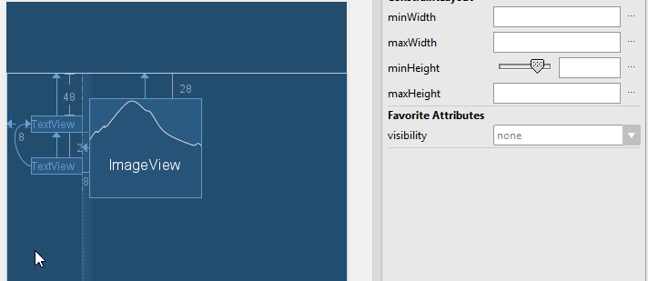
Group
Группы были презентованы на Google IO 2017 и пока не доступны официально. Чтобы поработать с ними, нужны те же действия, что и для барьеров.
Группа позволяет создать набор View, над которыми можно будет выполнять групповые операции.
Создадим группу
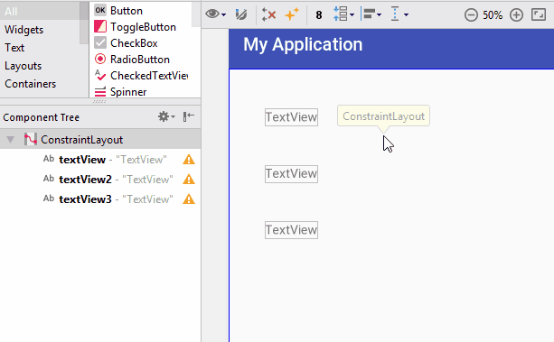
Мы добавляем группу на экран, а затем перетаскиванием добавляем в нее все TextView. Где будет находится группа на экране - неважно. Главное - какие View в нее были добавлены.
В layout-файле группа будет выглядеть так
<android.support.constraint.Group
android:layout_width="wrap_content"
android:layout_height="wrap_content"
android:id="@+id/group"
app:constraint_referenced_ids="textView2,textView3,textView" />Все добавленные View содержатся в атрибуте constraint_referenced_ids.
Теперь мы можем в коде работать с этой группой, как с обычным View.
Group group = (Group) findViewById(R.id.group);
group.setVisibility(View.GONE);
Все входящие в эту группу View станут невидимыми.
Документации пока маловато по этой теме, и не совсем понятны возможности. Т.е. не ясно, что группа делегирует своим View, а что нет. Например, видимость работает, а вот обработчик кликов - нет. Будем ждать официального релиза.
Circular
С помощью circular position мы можем настроить два View так, чтобы одно находилось на определенном расстоянии и под определенным углом от другого
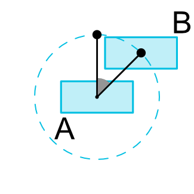
На картинке View B находится под углом и на определенном расстоянии от View A
Чтобы получить такой результат, нам надо настроить три атрибута для View B
- layout_constraintCircle - указываем id view, которое будет центром окружности, т.е. View A
- layout_constraintCircleRadius - расстояние от центра окружности до View B
- layout_constraintCircleAngle - угол (в градусах, от 0 до 360)
В следующем уроке рассмотрим ConstraintSet